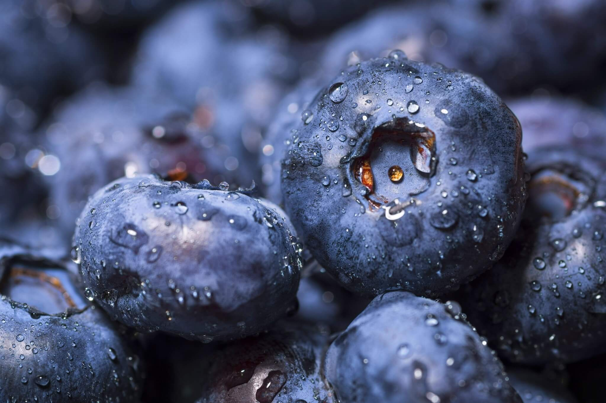
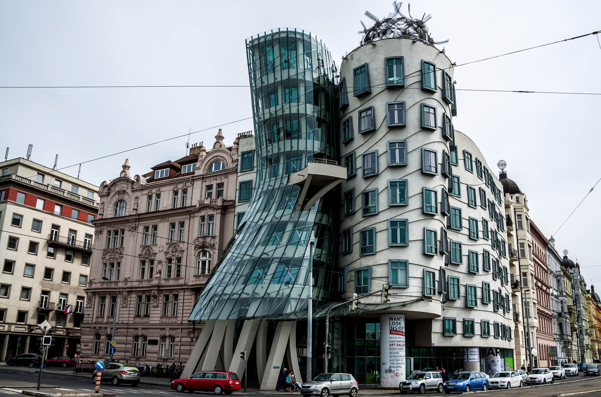
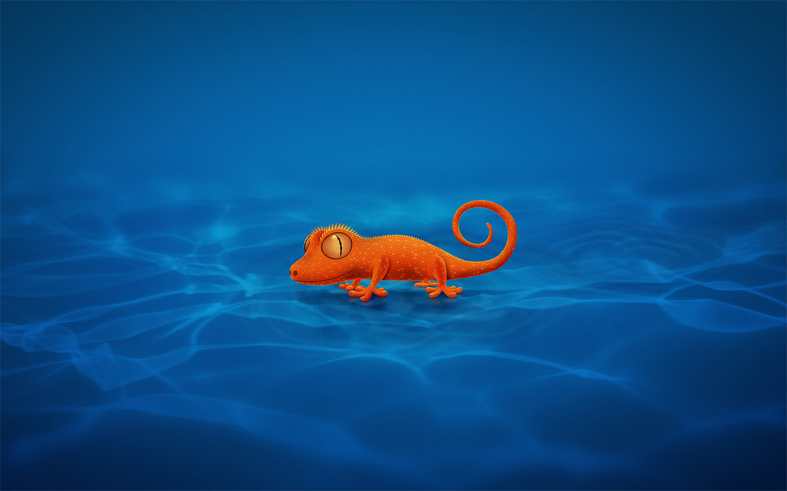
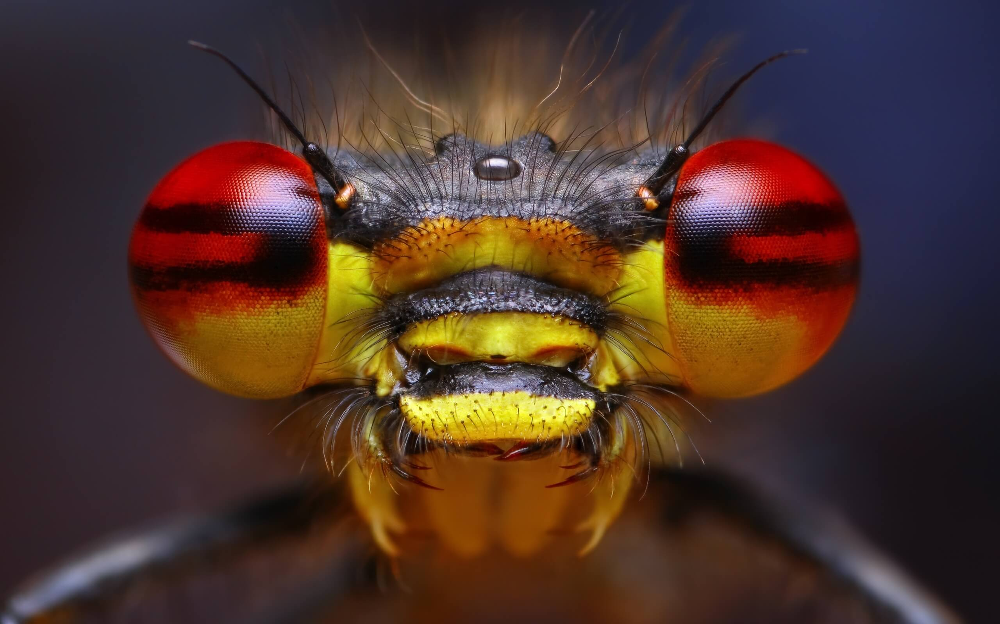
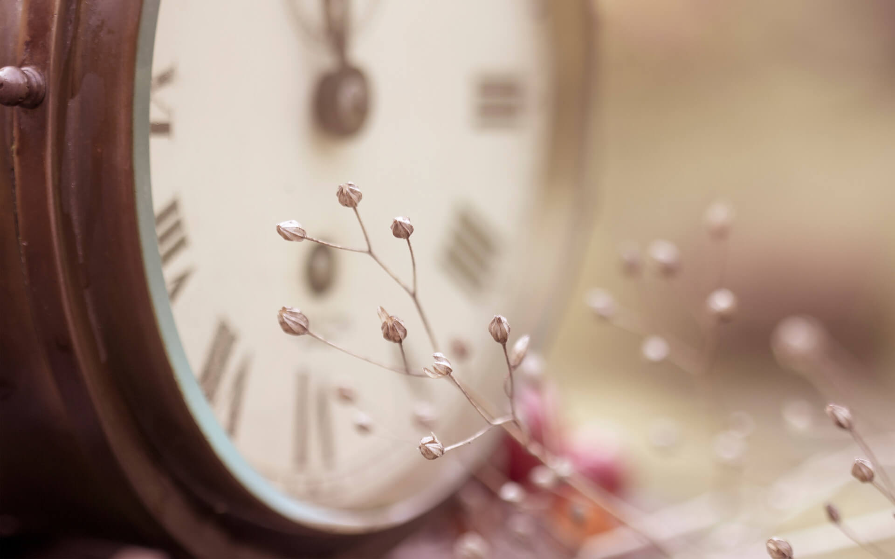
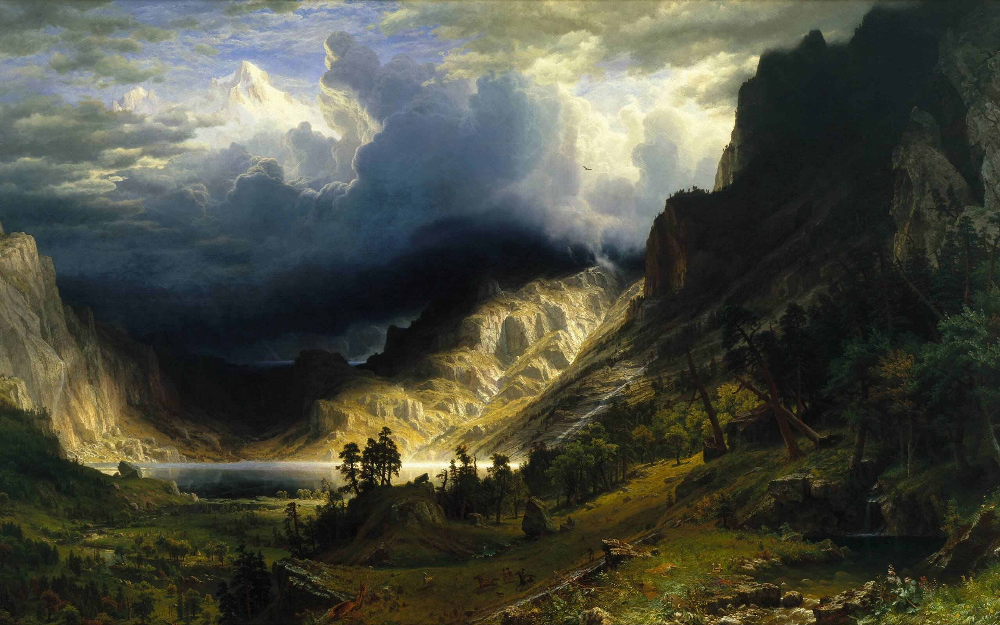
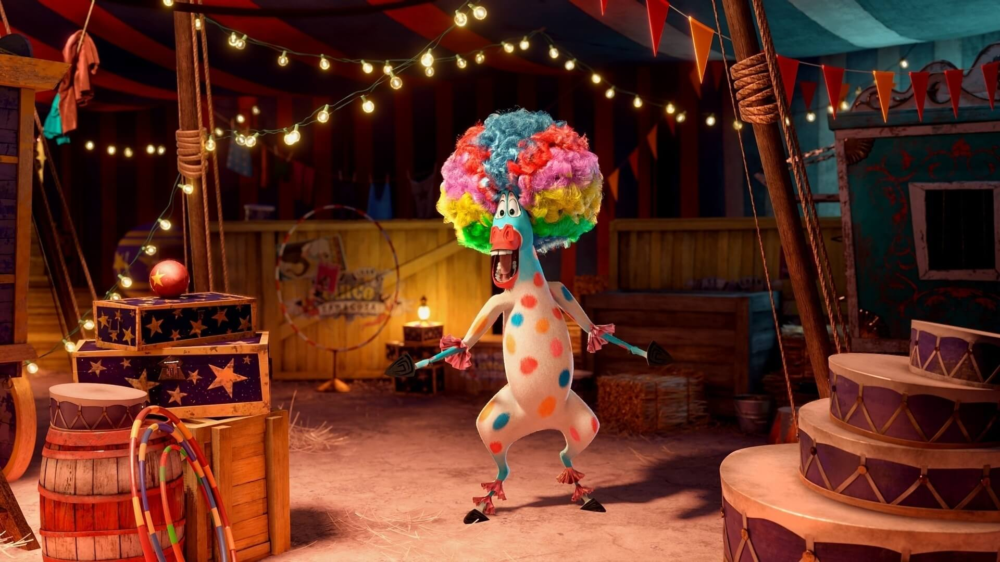
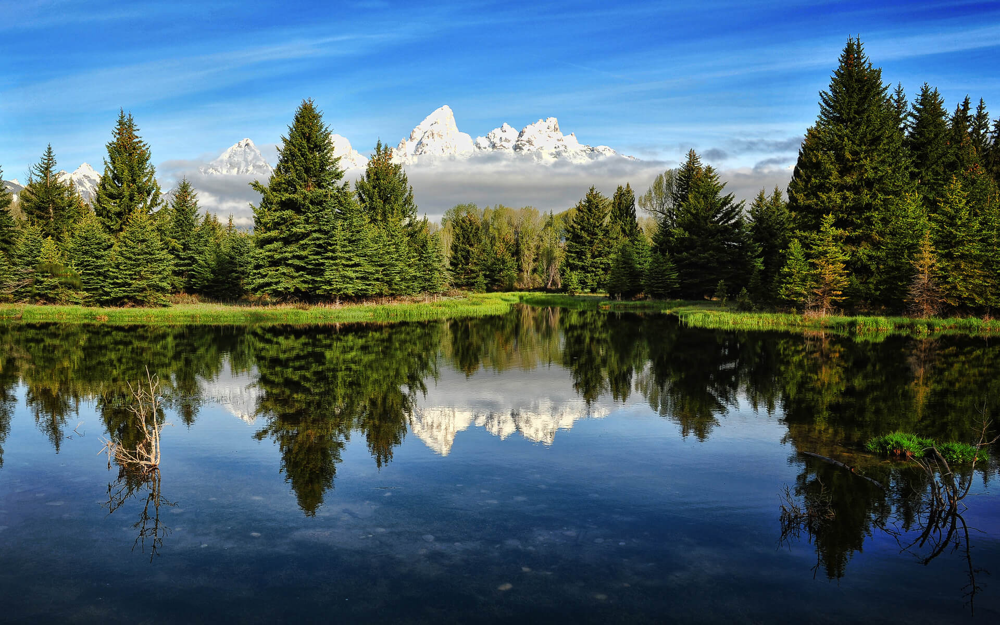

FIELD NOTE / 01
A little unexpected.
Curiosity comes in every size.
LOOK A LITTLE LONGER.
Some places ask you to stop.
Some details ask you to stay.
01 / THE BIGGER PICTURE
From the smallest detail to the widest horizon.
Let your eye
find its own way in.








THE WORLD DOESN’T NEED TO MOVE FASTER.
Sometimes, all it takes
is a closer look.
02 / ANOTHER SIDE OF STILLNESS
Two kinds of quiet.
A small shift opens a different world.
03 / OPEN HORIZONS
No itinerary. Just a series of small discoveries.
Keep
scrolling. See where your eye takes you.
04 / LITTLE THINGS, KEPT CLOSE
A detail. A daydream. A change of perspective.
Turn the
collection. Find a new favorite.
Curiosity comes in every size.
Some details ask for less.
Leave space for the improbable.
A whole world in one small thing.